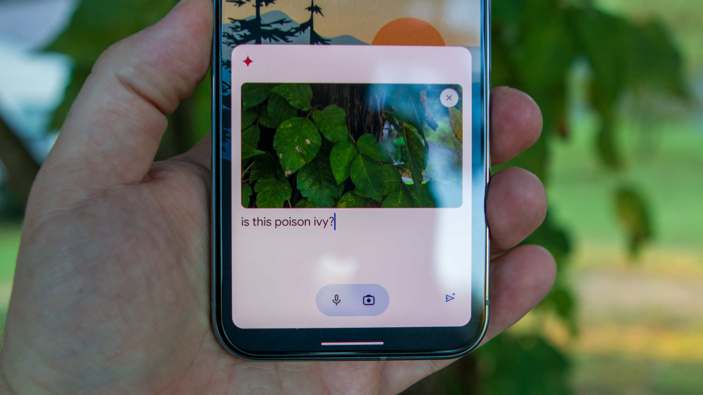

I turn audience insights into campaigns, content, and better customer experiences.
education UC Berkeley ’27 · Cognitive Science + Media Studies currently Social Media Intern at UC Berkeley · finishing my senior year previously TikTok · MangoBoost · Chime off the clock Content creation, K-pop, playlists, cheerleading & crocheting
the main gigs ✦ 2025–2026 Search preview •••
grow my small business ⌕
Sponsored · example.com Turn discovery into your next customer. Reach the right audience with a campaign built around your business.
Explore solutions · Get started
Organic search · example.com A small business guide to getting discovered Helpful content. Clear answers. Better search visibility.
Search ads + SEO e Example brand •••
Sponsored Made for Meet your next customer.
Meta feed ad Sponsored A little discovery. Explore now ↗ Performance Max
Illustrative ad formats · sample creative TikTok Growth Marketing InternFeb–Aug 2026
Campaigns, search & discovery Supported 15+ global SMB launches across 40+ stakeholders. Built reporting tools, advanced paid-search initiatives, and audited 5,000+ webpages to improve discovery.
Product imagery · MangoBoost ↗ MangoBoost Growth Marketing InternSep–Dec 2025
Making technical stories connect Created 15+ summit marketing assets that generated 67K+ impressions. Used LinkedIn analytics and a website UX audit to sharpen messaging and inform the redesign.
Product imagery · Chime ↗ Chime Content Strategy InternMay–Aug 2025
Clearer answers, faster support Audited 740+ knowledge-base assets and standardized content workflows for 2,500+ support agents. Searches per ticket fell 7.6% within 10 days.
company partnerships
the project files 📎 2024–2025 Contracted projects with companies and their teams.
Cider Project Manager · Aug–Dec 2025
Led a 10-person team researching Gen Z loyalty. Turned 500+ survey responses and social trends into retention and community recommendations.
Reference imagery ↗ PayPal Project Manager · Aug–Dec 2025
Led a 10-person team and 15 developer interviews. Translated Checkout onboarding and API friction into high-fidelity Figma prototypes.
Reference imagery ↗ Venmo Product Research & Design Analyst · Mar–May 2025
Synthesized 1,000+ surveys and 30+ focus groups into feature priorities and Figma prototypes for a personal finance concept.
Reference imagery ↗ Equinox Experiential Marketing Lead · Feb–May 2025
Coordinated two events with 1,300+ attendees each, generating hundreds of qualified leads and recommendations for future student activations.
Reference imagery ↗ 
TikTok × Google Gemini Marketing Strategy Consultant · Sep–Dec 2024
Used 500+ survey responses and 30 focus groups to develop TikTok-first campaign concepts, presented to senior brand leadership.
Reference imagery ↗ Skullcandy Social Media Marketing Consultant · Sep–Dec 2024
Developed Gen Z positioning and biweekly social content. Analyzed 10+ performance KPIs to shape evergreen storytelling.
Reference imagery ↗ Liner Growth Marketing Analyst · Sep–Dec 2024
Acquired 350+ users through student campaigns, audience testing, and 15+ hours of live product demos and Q&A.
Reference imagery ↗ a little about me a little face to the name.
🎓 UC Berkeley ’27I'm studying Cognitive Science and Media Studies at UC Berkeley. I'm interested in what makes people pay attention—and what inspires them to act.
Outside work: 🎬 content creation🎧 playlists & K-pop marketing🧶 crocheting
More experience in my résumé ↗